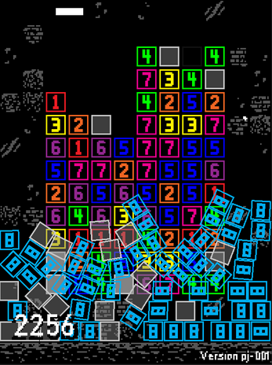
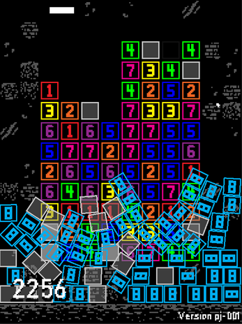
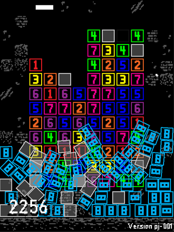

Crazy Eight Collector
Crazy Eight Collector is a small falling block game that I made for the 33rd GM48. I later released the game, more polished and balanced, to itch.io for a dollar.
 

25 01 20
I'm currently working on a terminal based mmo that can be played in browser. While i'm working on it, you can play the latest current version here.
07 06 21
Crapple is fully capable of saving, loading, running and editing file. For writing programs it uses my very own custom language called JANK, which you can find documentation included in the download .zip.
A a quirk to be careful of is that there is some weirdness to writing code in the very first and last line, and so its standard practive to leave these blank.
You can view the changelog here
There is an issue with saved files not being found with the 'ls' function. They can still be saved, loaded and run though.
25 04 07 06 21
VSWS Red is my version of VSWS. I've added small little improvements that make the use of it easier for me. The things that I've changed are:
There are more things that I want to add to the Red version of VSWS. Some of these are:
I'll try to keep this version up to date with the main line, but I don't promise anything.
Props to Br👁an for the original version.
07 08 20
PlayerForms is a extension for GMS:2, for getting text input from the player without having to use the default get_string() function. I'll add things to this as I want/need them
Although I haven't worked on this in ages, I do plan one day to get a working, useful and stable version of this avaliable.
06 08 20 25 04 21
Crazy Eight Collector is a small falling block game that I made for the 33rd GM48. I later released the game, more polished and balanced, to itch.io for a dollar.

25 01 20